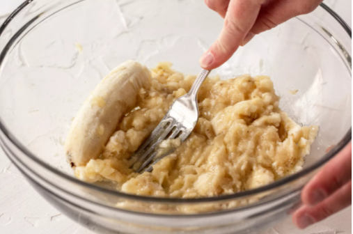
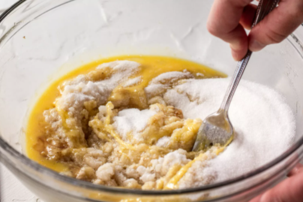
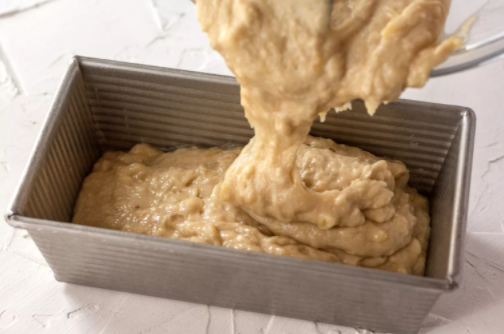
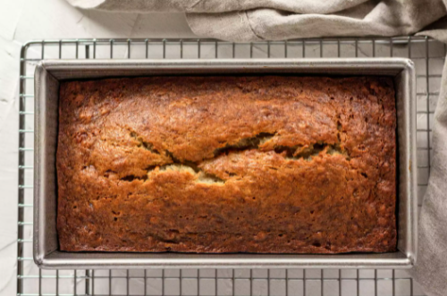

Banana Bread Recipe
- Preheat the oven to 350°F, and butter a 4x8-inch loaf pan.
- In a mixing bowl, mash the ripe bananas with a fork until completely smooth. 
- Stir the melted butter into the mashed bananas. Mix in the baking soda and salt. 
- Stir in the sugar, beaten egg and vanilla extract. Mix in the flour.
- Pour the batter into your prepared loaf pan. 
- Bake for 50 minutes to 1 hour at 350°F, or until a tester inserted into the center comes out clean.
- Remove from oven and let cool in the pan for a few minutes.
- Then remove the banana bread from the pan and let cool completely before serving. 